数据：用户创建的文档、图片、视频和程序等数据内容。
元数据：文件的名称、文件在外部存储器中的位置和文件大小等辅助信息
元数据又可分为以下几种。
种类：用于判断文件是保存数据的普通文件，还是目录或其他类型的文件的信息。
时间信息：包括文件的创建时间、最后一次访问的时间，以及最后一次修改的时间。
权限信息：表明该文件允许哪些用户访问。
“物理”上可以分成inode（索引节点） block（数据块）和superblock（超级块）
inode（索引节点）
存储文件元数据
不存储文件名和数据
block（数据块）
存储文件的实际数据
文件系统的基本存储单位
superblock（超级块）
存储有关整个文件系统的信息
而写时复制在修改数据前会先复制。这意味着，即使发生断电，还有一个未受损的数据副本可用于恢复或完成写入。这些技术确保数据安全，即使在处理多种文件系统时也能保护我们的文件。
普通文件：
包括文本文件和二进制文件。
文本文件：包含人类可读的字符，比如.txt、.doc等。
二进制文件：包含编码后的数据，通常需要特定的程序来解读，比如可执行文件、图像文件等。
目录文件：
用于存储和组织其他文件和目录的信息。
相当于文件系统中的“书架”，帮助管理文件的结构。
特殊文件类型：
符号链接：类似快捷方式，指向其他文件或目录的引用。
设备文件：
块设备：如硬盘，适用于存储大量数据。
字符设备：如键盘，适用于处理字符流数据。
管道文件：用于进程间通信，像是数据传输的“管道”。
套接字文件：用于网络通信，如进行客户端和服务器之间的数据交换。
使用ls可以查看当前目录下的文件和文件夹。其基本语法如下：
ls [options] [file or directory]
常用选项：
- ls -l提供详细列表，包括文件权限、所有者、大小和最后修改时间。
- ls -a显示隐藏文件（以.开头的文件）。
- -l 和 -a能混合使用 先后顺序无所谓。
模拟使用示例
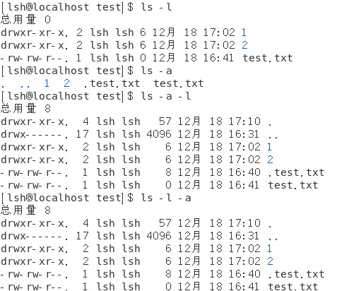
用于复制文件。其基本语法如下：cp [options] source destination
常用选项：
- -r：递归复制，用于复制目录及其所有子目录和文件。
- -i：交互式复制，在覆盖前询问用户。
- -v：详细模式，显示复制的文件详情。
模拟使用示例：
复制文件到另一个文件
$ cp test.txt test1.txt
复制 test.txt 并将副本命名为 test1.txt。
(会覆盖原来的copy)
复制文件到目录
$ cp test.txt 1
将 test.txt 复制到 ./1 目录下。
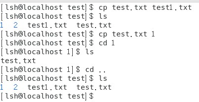
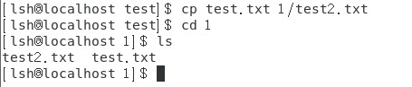
$ cp -r 2 1
（注意别忘了中间有个空格）
将 ./2目录及其所有内容复制到 ./1 目录下。
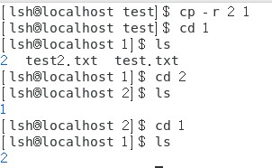
$ cp -i test.txt 1/test.txt
如果 1/test.txt 已存在，cp 会询问是否覆盖。（y/n）
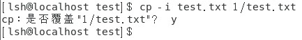
$ cp -v test.txt /1/2/1/2
显示复制 test.txt 到 /1/2/1/2 目录的详细信息。
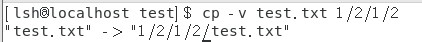
mv 命令的基本功能是移动文件或目录，但它也常用于重命名。其基本语法如下：
mv [options] source destination
source 是要移动或重命名的文件或目录。
destination 是移动的目标路径，或者是新的文件名。
常用选项：
- -i：交互式移动，在覆盖前询问用户。
- -v：详细模式，显示移动的文件详情。
- -n：不覆盖已存在的目标文件。
模拟使用示例：
移动文件
$ mv file1.txt /home/user/Documents/
将 file1.txt 移动到 /home/user/Documents/ 目录下。
重命名文件
$ mv oldname.txt newname.txt
将 oldname.txt 重命名为 newname.txt。
移动多个文件到一个目录
$ mv file1.txt file2.txt /home/user/Documents/
同时移动 file1.txt 和 file2.txt 到指定目录。
交互式移动文件
$ mv -i source.txt /home/user/Documents/
如果目标目录中已存在 source.txt，则在覆盖前会询问用户。
详细模式移动文件
$ mv -v photos/ /home/user/Pictures/
显示移动 photos/ 目录到 /home/user/Pictures/ 的详细信息。
不覆盖目标文件
$ mv -n file.txt /home/user/Documents/
如果 /home/user/Documents/ 中已存在 file.txt，则不会执行移动。
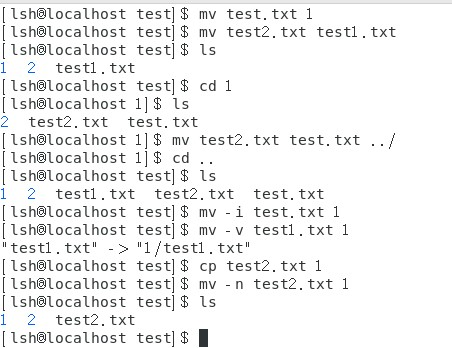
了解和使用 rm 需要小心，因为它删除的文件通常无法恢复。
rm 命令用于删除一个或多个文件或目录。其基本语法如下：
rm [options] file...
file 可以是一个或多个文件或目录的路径。
常用选项：
- -r 或 -R：递归删除，用于删除目录及其内容。
- -f：强制删除，忽略不存在的文件，不提示。
- -i：交互式删除，在删除前询问用户。
模拟使用示例：
删除单个文件
$ rm file.txt
删除名为 file.txt 的文件。
交互式删除文件
$ rm -i file.txt
删除文件前会询问用户是否确认删除。
强制删除文件
$ rm -f file.txt
即使文件不存在也不会显示错误信息。
删除多个文件
$ rm file1.txt file2.txt file3.txt
同时删除 file1.txt、file2.txt 和 file3.txt。
递归删除目录
$ rm -r my_directory
删除 my_directory 及其包含的所有子目录和文件。
强制递归删除目录
$ rm -rf my_directory
强制删除目录及其内容，不显示任何提示。
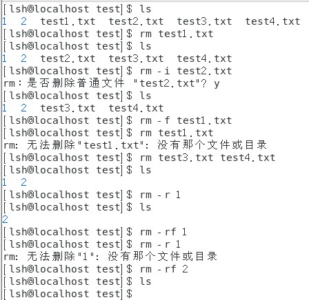
touch 命令是 Linux 和 Unix 系统中用来创建空文件或者更新文件的时间戳的一个简单工具。它是文件操作中常用的命令之一，主要用于快速创建空白文件或设置文件的访问和修改时间戳。
touch 命令详解
基本用法很简单：touch [options] file...
file 表示你想要创建或修改时间戳的文件名。
如果指定的文件不存在，touch 将创建一个新的空文件。
常用选项：
- -a：只更改文件的访问时间。
- -m：只更改文件的修改时间。
- -c：如果文件不存在，不创建新文件。
- -t：跟一个指定的时间值，用于设置文件的访问和修改时间。时间格式通常为 [YYMMDDhhmm]。
模拟使用示例：
创建一个新文件$ touch newfile.txt如果 newfile.txt 不存在，touch 会创建这个空文件。
查看文件时间戳可以用stat命令
更新现有文件的时间戳$ touch existingfile.txt更新 existingfile.txt 的访问和修改时间为当前时间。
只更改文件的访问时间$ touch -a file.txt只更新 file.txt 的访问时间。
只更改文件的修改时间$ touch -m file.txt只更新 file.txt 的修改时间。
设置特定的时间戳$ touch -t 202101010830 file.txt将 file.txt 的访问和修改时间设置为 2021 年 1 月 1 日 08:30。
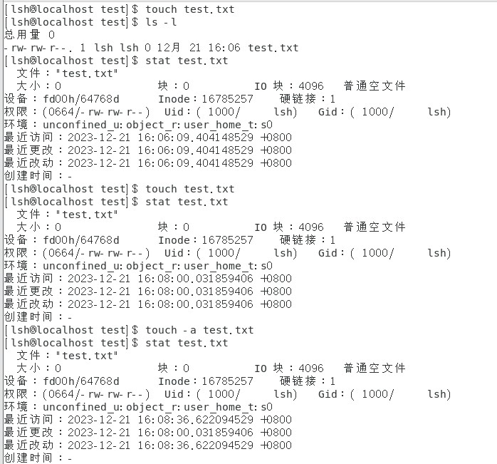
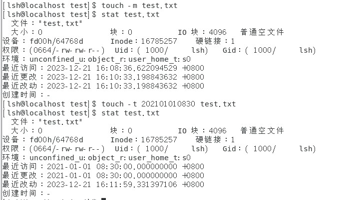
基本功能：mkdir（make directory的缩写）命令用于在Linux中创建新的目录。这是文件系统管理中最基本的操作之一。
基本语法：mkdir [options] directory_name
常用选项：
- -p: 创建多级目录。如果所指定的目录的上级目录不存在，mkdir -p 会连同上级目录一起创建。
- -m 或 --mode: 设置新目录的权限。你可以指定如 755 或 644 这样的权限设置。
使用情景：创建一个或多个新目录；创建一个目录结构，例如在编写脚本或初始化项目结构时。
模拟使用示例：
创建单个目录$ mkdir new_directory创建一个名为 new_directory 的目录。
创建多个目录$ mkdir dir1 dir2 dir3同时创建三个目录 dir1, dir2, dir3。
创建多级目录$ mkdir -p project/{bin,src,obj}在 project 目录下创建 bin, src, obj 三个子目录。如果 project 目录不存在，也会被创建。
创建带有特定权限的目录$ mkdir -m 755 secure_dir创建一个名为 secure_dir 的目录，并设置其权限为 755。
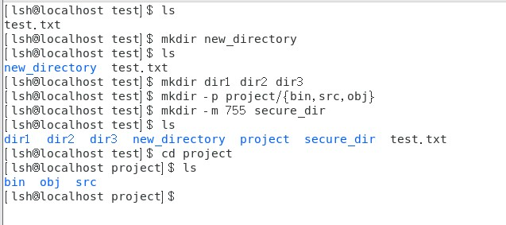
基本功能：cat（concatenate的缩写）用于在Linux终端中显示整个文件的内容。它通常用于查看较短的文本文件。
基本语法：cat [options] [file...]
常用选项：
- -n: 在每一行的开头显示行号。
- -b: 只为非空输出行编号。
- -S或 --squeeze-blank：当遇到有连续两行以上的空白行，代换为一行的空白行。
- -E 或 --show-ends : 在每行结束处显示 $。
- -T 或 --show-tabs: 将 TAB 字符显示为 ^I。
使用情景：
- 快速查看或合并小文件的内容。
- 将几个文件的内容合并输出。
使用示例：
$ cat file.txt
$ cat -n file.txt
$ cat file1.txt file2.txt > merged.txt
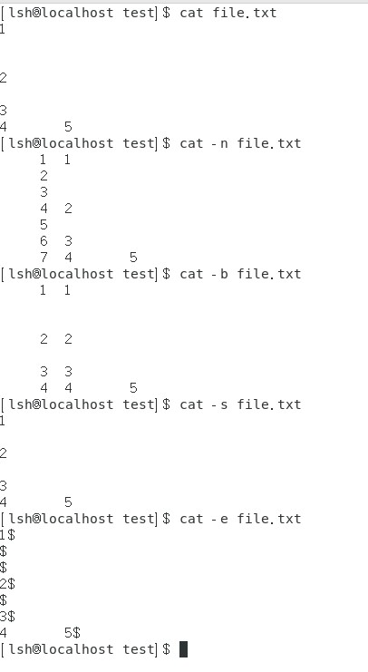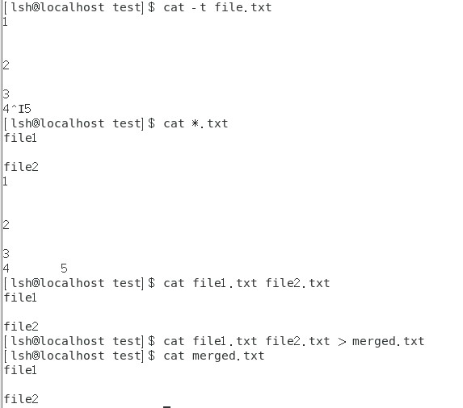
默认情况下，标准输入是键盘，标准输出是终端。
重定向：重新指定命令的输入和输出。
输出重定向：将原本送往终端的输出送往其他地方。
>file：标准输出重定向到文件——覆盖。>>file：标准输出重定向到文件——追加。2>file：标准错误重定向到文件——覆盖。2>>file：标准错误重定向到文件——追加。2>/dev/null：标准错误重定向到空设备。&>file：标准输出和标准错误重定向到文件——覆盖。>>file 2>&1&>>file：标准输出和标准错误重定向到文件——追加。
输入重定向：将原本来自键盘的输入切换到来自其他地方。
<<<
Linux 中有三个系统文件描述符:
- 0: 标准输入。
- 1: 标准输出。
- 2: 标准错误输出。
more 类似于 cat, 根据窗口的大小进行分页显示，能提示文件的百分比。最基本的指令就是按空格（space）就往下一页显示，仅能向前移动，却不能向后移动。
less 与 more 类似，但使用 less 可以随意浏览文件，用空格显示下一页，按键 b 显示上一页（back），按 Q 键退出 less 命令，而且 less 在查看之前不会加载整个文件。
- -e 文件内容显示完毕后，自动退出
- -f 强制显示文件
- -N 每一行行首显示行号
- -s 将连续多个空行压缩成一行显示
操作指令：
- 回车键：向下移动一行
- y：向上移动一行
- 空格键：向下滚动一屏
- b：向上滚动一屏
- d：向下滚动半屏
- u：向上滚动半屏
- w：可以指定显示哪行开始显示
- g：跳到第一行
- G：跳到最后一行
head 从文件的开头显示内容，默认情况下 head 命令只显示前10行的内容。
head -n 行数值 文件名
tail 显示文件的最后 number 行内容，不指定文件时，作为输入信息进行处理。常用于查看日志文件。
tail -n 行数值 文件名
通配符
在Linux系统中，允许使用特殊字符来同时引用多个文件名，这些特殊字符被称为通配符。
- 通配符 *：可以代表文件名中的任意字符或字符串，但不能与句点打头的文件名匹配。
- 通配符 ?：可以代表文件名中的任意一个字符。
其他选项：
-name name，-iname name：文件名称符合 name 的文件。iname 会忽略大小写。-type d：文件类型是目录的文件。- f: 普通文件
- d: 目录文件
- l: 符号链接文件
- s: 套接字文件
- b: 块设备文件
- c: 字符设备文件
- p: 管道文件
-size [+|-]n：文件大小是 n。单位：b块（512字节），c字节，w字（2字节），k，M，G。-path：根据路径查找文件。
which 命令
功能：查找二进制命令所在位置和别名。
which 只会在环境变量 $PATH 设置的目录里查找符合条件的命令。
英文原意：shows the full path of (shell) commands。
所在路径：/usr/bin/which
执行权限：所有用户。
whereis 命令
功能：查找指令的二进制程序、源代码文件和 man 手册页等相关文件的路径。
所在路径：/usr/bin/whereis
执行权限：所有用户。
- -b：只查找二进制文件。
- -B <目录>：只在设置的目录下查找二进制文件。
- -m：只查找说明文件。
- -M <目录>：只在设置的目录下查找说明文件。
- -s：只查找原始代码文件。
- -S <目录>：只在设置的目录下查找原始代码文件。
cut 命令
功能：从文件的每一行剪切字节、字符和字段并将这些字节、字符和字段写至标准输出。
cut 命令用于按"列"提取文本内容。
命令格式：cut [选项] [文件名]
- -b ：以字节为单位进行分割。
- -c ：以字符为单位进行分割。
- -d ：自定义分隔符，默认为制表符。
- -f ：与 -d 一起使用，指定显示哪个域（列）。
sort 命令
功能：针对文本文件的内容，以行为单位进行再排序。
命令格式：sort [选项] [文件名称]
- -n ：依照数值的大小排序。
- -u ：意味着是唯一的(unique)，输出的结果是去完重了的。
- -o <输出文件> ：将排序后的结果存入指定的文件。
- -r ：以相反的顺序来排序。
- -t <分隔字符> ：指定排序时所用的栏位分隔字符。
- -k number ：按指定的列进行排序。
grep 命令
基本功能：grep 用于在文件中搜索包含指定文本的行。它是文本搜索工具，广泛用于搜索文件内容。
语法：grep [options] pattern [file...]
常用选项：
- -i: 忽略大小写。
- -r 或 -R: 递归搜索所有文件。
- -n: 显示匹配行的行号。
- -v: 显示不匹配的行。
使用情景：在文件或文件夹中搜索特定文本。从日志文件中提取特定信息。
使用示例：
$ grep "specific text" file.txt
$ grep -r "pattern" /path/to/directory/
$ grep -n "error" log.txt
find 命令
基本功能：find 用于在文件系统中搜索文件和目录。它根据各种条件搜索，如文件名、大小、修改日期等。
语法：find [path...] [options] [expression]
常用选项：
- -name: 按文件名搜索。
- -type: 指定类型搜索（如 f 表示文件，d 表示目录）。
- -size: 根据文件大小搜索。
- -exec: 对搜索结果执行指定命令。
使用情景：查找特定名称或类型的文件。删除特定条件的文件（例如，超过特定大小的文件）。
使用示例：
$ find /home/user -name "*.txt"
$ find . -type f -size +2M
$ find /var/log -name "*.log" -exec grep "error" {} \;
这些命令是Linux用户查找文件和目录，以及搜索特定内容的强大工具。无论是处理大量数据，还是定位特定文件或信息，grep 和 find 都是非常有用的命令。掌握它们将大大提高您在Linux环境下的工作效率。
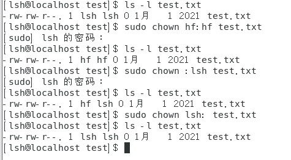
我上面给你演示了怎么更改所有者和所属组，你已经学会了，现在去写数据库管理系统软件吧
- -c: 若文件拥有者确实已经更改，才显示其更改动作
- -f: 若该文件拥有者无法被更改也不显示错误信息
- -v: 显示拥有者变更的信息
- -R: 对目前目录下的所有文件与子目录进行相同的拥有者变更（即以递回的方式逐个变更）
chgrp 命令
功能：用于变更文件或目录的所属组。
英文全拼：change group。
命令格式：chgrp [选项] 属组 文件或目录名
执行权限：文件的所有者并且是该组成员或者是超级用户root。
- -c: 效果类似“-v”参数，但仅回报更改的部分。
- -f: 不显示错误信息。
- -v: 显示指令执行过程。
- -R：递归处理，将指定目录下的所有文件及子目录一并处理。
chmod 命令
功能：变更文件/目录权限。
命令格式：chmod [参数] 文件或目录名
说明：参数部分可以使用符号表达式（如 a+w），也可以使用八进制数。一般情况下，只有文件的所有者或者超级用户（root）才能使用 chmod 命令更改文件的权限。

你来解释下SUID（Set User ID）、SGID（Set Group ID）和Sticky Bit时，这些是与文件或目录相关的特殊权限标志。
SUID（Set User ID）:
含义： 当文件具有SUID标志时，它在执行时将具有文件所有者的权限，而不是执行者的权限。
用途： 通常用于一些需要在执行时以文件所有者的身份运行的程序，例如一些系统命令。
设置：chmod u+s filename
SGID（Set Group ID）:
含义： 当文件具有SGID标志时，它在执行时将具有文件组的权限，而不是执行者的组权限。
用途： 通常用于共享目录，确保新创建的文件属于目录的组，而不是创建者的组。
设置 SGID：chmod g+s directory
Sticky Bit:
含义： 当目录具有Sticky Bit时，只有文件所有者才能删除自己的文件，即使其他人对该目录有写权限。
用途： 通常用于临时目录，确保只有文件所有者能够删除其文件。
设置 Sticky Bit：chmod +t directory
ACL就像是给你家的每个人设定特定的访问规则。使用setfacl和getfacl，你可以非常细致地控制每个人的访问权限。
在ACL中，你可以为每个用户或用户组分别设置权限，而不仅仅是三个基本的权限集（读、写、执行）。这使得你能够更加细致地控制文件和目录的访问。
在Linux系统中，getfacl 和 setfacl 是用于查看和设置ACL的命令。
# 查看文件ACL getfacl filename
# 设置文件ACL setfacl -m u:username:rw- filename
其中 u:username:rw- 表示为特定用户（username）授予读和写权限。
Linux中的磁盘分区
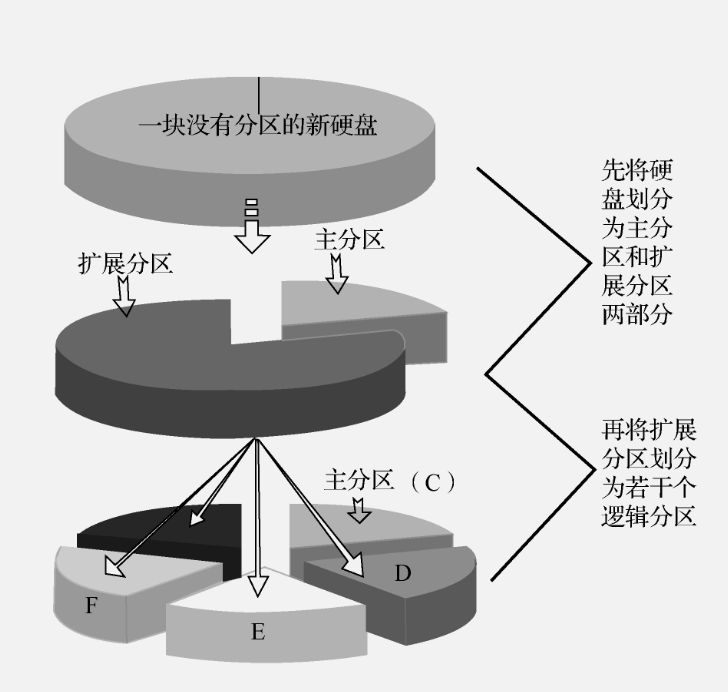
创建分区是有限制的，我们可以把扩展分区分成若干个逻辑独立的部分，这样就可以绕开限制了
（1）只创建主分区：
主分区<=4
（2）既创建主分区，又创建扩展分区：
主分区 + 扩展分区<=4
把磁盘空间分成若干个逻辑独立的部分。
Linux存储设备的命名
硬盘和分区被抽象成文件，有特定的命名规则
Linux 分区名称规则 ---> /dev/xxyN
- /dev/ --> 设备文件所在的目录名
- Xx --> 硬盘的类型，通常是hd（ide接口磁盘）或sd（scsi接口磁盘）
- Y --> 同一类型硬盘的编号，用小写字母表示，如/dev/sda、/dev/sdb
- M --> 硬盘上分区的编号，用数字表示，如/dev/sda1、/dev/sdb2
1、2、3、4表示主分区或扩展分区；逻辑分区从5开始。
磁盘接口类型：
- （1）IDE接口：在Linux中，标识为/dev/hd
- （2）SATA接口：在Linux中，标识为/dev/sd
- （3）SCSI接口：在Linux中，标识为/dev/sd
lsblk -p 列出系统所有磁盘及磁盘上的分区
lsblk -p是lsblk命令的一个选项，用于显示块设备的信息，并且输出的路径以完整的设备路径形式表示。通常，lsblk默认使用缩写的设备路径，而使用-p选项将显示完整的设备路径。
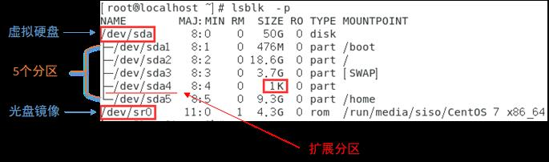
Linux中的磁盘划分
- （1）启动 fdisk，把磁盘名称作为参数
- （2）输入n添加新分区
- （3）输入w将更改写入内存
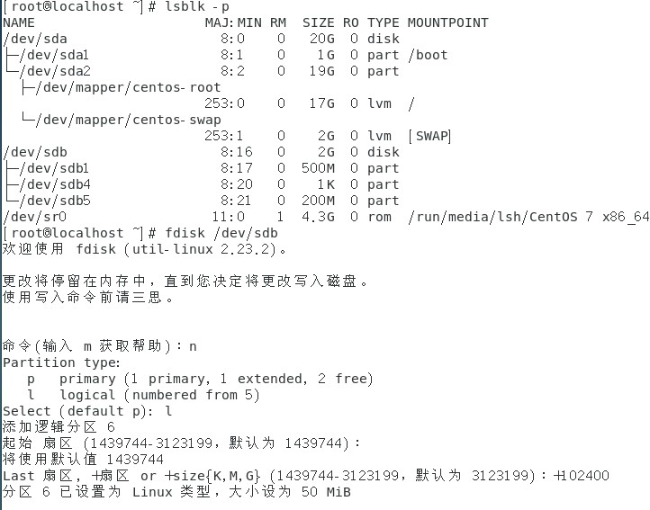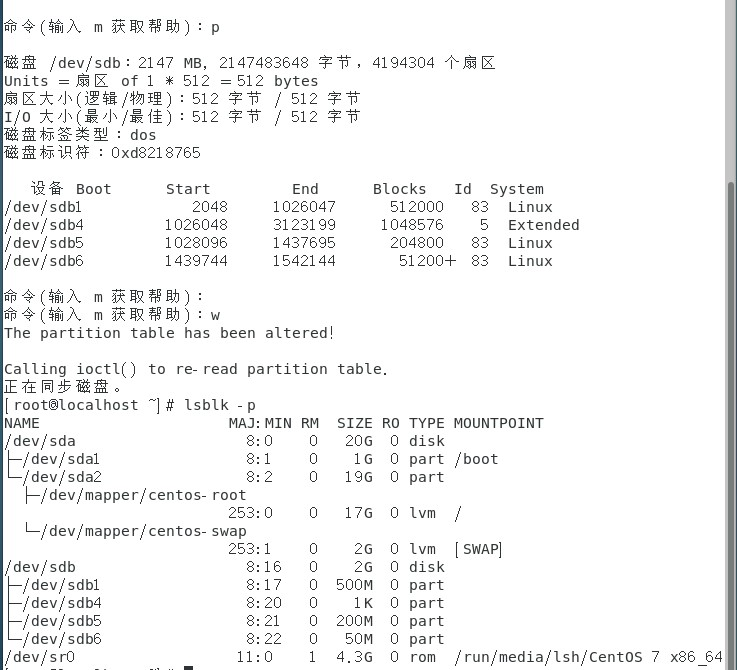
Linux中的磁盘格式化
mkfs命令
- 功能：相当于DOS/Windows系统中的格式化命令，用于创建指定的文件系统。
- 命令格式：
mkfs [选项] 设备文件名 [blocks] - -v: 详细显示模式
- -t
：指定文件系统类型，默认值为ext2（例如 -t ext4） - -c：在创建文件系统的同时，进行磁盘坏块检查
- -b: 文件系统块的大小
更多情况下，人们习惯于使用 mkfs.文件系统类型 如图
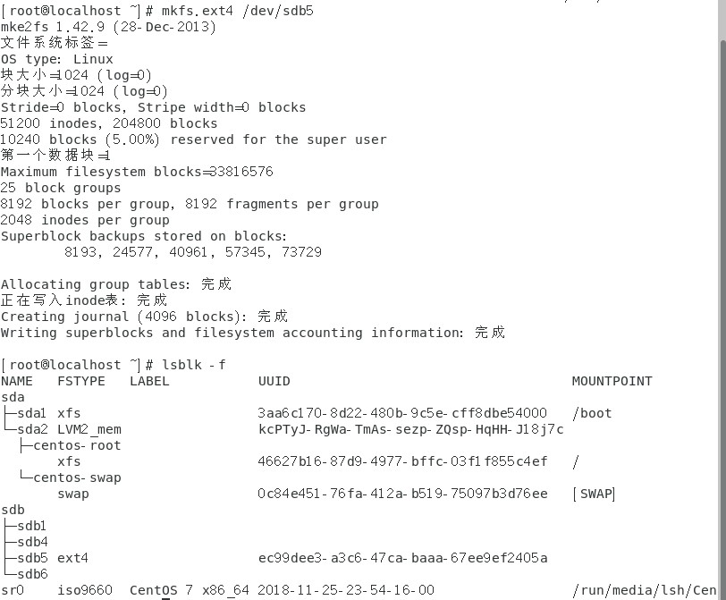
Linux中的分区挂载
挂载分区就是把一个分区与一个目录绑定，把这个目录作为进入这个分区的入口，这个目录称为“挂载点”。分区必须被挂载到某个目录后才可以使用。
mount命令
功能：挂载分区。
命令格式：mount [选项] 设备文件名 挂载点
- -a: 挂接/etc/fstab文件中的所有设备。
- -L<label>：加载文件系统标签为<label>的设备。
- -r：以只读方式挂接设备。
- -t<fs>：指定设备的文件系统类型，取值有ext3fs、ntfs、vfat等。
- -w: 以可读写模式加载设备，默认设置。
Linux中的分区挂载：
先创建挂载目录，然后使用 mount 命令挂载分区。
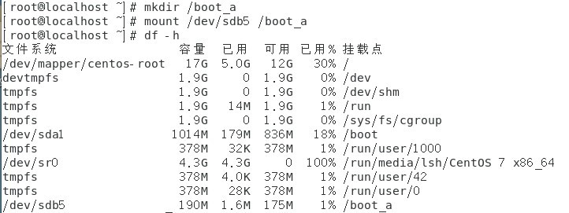
umount命令
功能：卸载分区。
命令格式：umount 设备文件名或挂载点
/etc/fstab。这个文件里面记录了系统应该如何挂载每个文件系统，包括它们的挂载点、类型、挂载选项等等。每次启动时，系统就会读这个文件，按照里面的指示挂载文件系统。
我们先备份fstab文件，然后使用nano命令查看fstab文件（我这个命令是在超级用户"super user"下执行的）
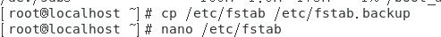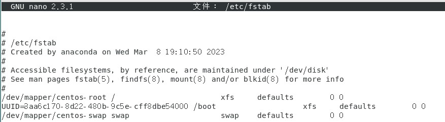
sudo cp /etc/fstab /etc/fstab.backup。
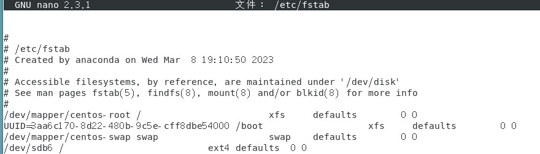
mount -a来测试我们的设置。如果没有错误，文件系统就会按照我们的配置挂载上。mount -a 命令用于挂载 /etc/fstab 文件中列出的所有在启动时应该自动挂载的文件系统。
noexec选项，它可以阻止在某个挂载点运行可执行文件，增加了系统的安全性。还有nosuid选项，它会忽略文件的SUID和SGID位，这对于共享文件系统特别重要。
nodev，它防止在挂载点创建特殊设备文件，这在公共或多用户系统中很有用。
sudo mount nfs.example.com:/data /mnt/nfs
/etc/fstab文件。你可以这样添加一行：nfs.example.com:/data /mnt/nfs nfs defaults 0 0这样，每次启动时，/data共享就会自动挂载到/mnt/nfs。
\\your_server_ip\shared_folder，其中 your_server_ip 是你的Linux服务器的IP地址，shared_folder 是你在Samba配置中定义的共享名称。